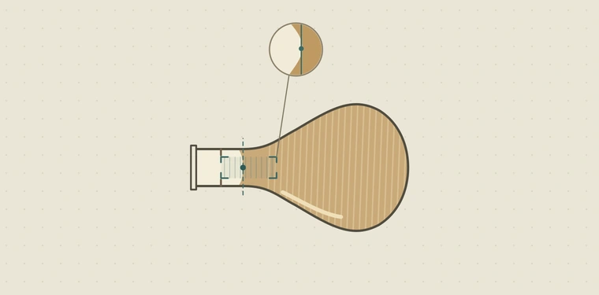

这条边缘在哪一列
自动定容项目的 liquid.py 用 scale_line_x 记录刻度的横坐标，用 raw_max_x 记录液面候选位置。对这套相机画面来说，要找的是一列像素。
拿一帧锁定刻度后的图像，标出刻度、检测起点和搜索区的上下界。代码取 BGR 图像的绿色通道，并从上下两端各缩进一段，让瓶壁上下沿尽量落在计算区域以外。
锁定那一帧提供了什么
OpenCV 的 Sobel 算子近似计算图像的方向导数。沿 x 求导，对竖直的明暗交界响应很强。梯度先用浮点数保存再取绝对值，由暗到亮和由亮到暗的边缘都能计入。
锁定刻度时，程序把各列绝对梯度的均值存作基线。后续帧对每列取第 85 百分位数，分别对当前值和基线做 log(1+x)，再相减、平滑。若某列新增一条强边缘，差值曲线会在附近隆起。
把候选峰画回原图
按峰高、突出程度和间距筛过一遍，取最靠左的合格峰。假设裁剪窗口从原图第 240 列开始，峰在窗口内第 36 列，画回原图的位置应是 240＋36＝276。漏加偏移得到的线可能帧帧都很稳定，却始终离液面一截。
遇到反光时，把原帧、平滑曲线、原始峰位和跟踪输出放在一起。峰跟着反光走，就回看选区与曝光。峰在跟随液面而输出停住了，再查历史中位数以及接近刻度时限制回退的条件。
源码与参考资料
相关项目自动定容系统